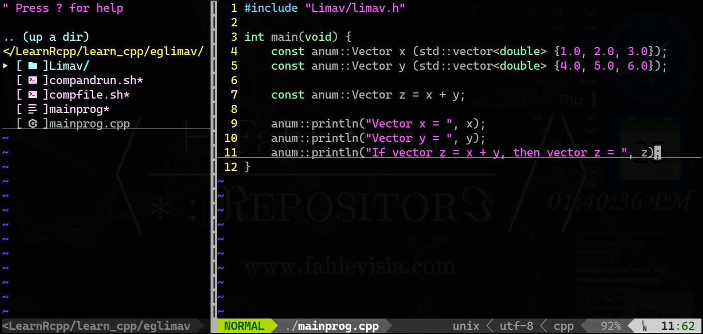

1 Introduction
Previously, we had written 2 articles which discuss about computation of vectors and matrix in linear algebra (Fahlevi, M.R. 2024). In these 2 articles, we had developed our own C++ header limav.h based on our knowledge about numerical analysis and linear algebra. The first article only discuss about the computation of vectors, and in the second article we discuss about the computation of matrix and vectors in linear algebra. Both of these 2 articles provide the theoritical aspect, how to compute it, and a table that summarize the computation.
In this 3rd article, we focus on the practical of our own C++ header, limav.h. If in the previous 2 articles provide a table that summarize the computation, then in this article, we provide the description of every constructors, function members (method), functions of limav.h together with a simple example.
The rest of this article is organized as follows, in section 2, we discuss about how to use limav.h in linux and in windows operating system as well. In section 3 we have the documentation of limav.h. Finally, we conclude our discussion in section 4.
2 How to Install and Use limav.h
2.1 In Linux Operating System
Requirements:
\(1\). C++ compiler. In our case, we use g++.
\(2\). A text editor. In our case, we use vim text editor.
\(3\). Our Limav’s directory.
\(4\). As always, a terminal.
Steps to install and use limav.h:
\(1\). Create a new folder having your purpose as the name of this folder. For example, eglimav
\(2\). Copy Limav’s directory in this new folder.
\(3\). In this new folder, create 2 new bash script (.sh). The first name of the bash script is compfile.sh which is stand for compile file and the second name of the bash script is compandrun.sh which is stand for compile file and run the program. In our example, in our eglimav, we should have compfile.sh and compandrun.sh.
\(4\). Open compfile.sh by using a text editor, and copy and paste this bash script
#!/bin/bash
echo "g++ Limav/Linav/linav.h Limav/Linav/linav.cpp Limav/Linav/linop.cpp Limav/Linav/printprog.cpp Limav/Linam/linam.h Limav/Linam/linam.cpp Limav/Linam/matop.cpp Limav/Linam/printprog.cpp Limav/limav.h Limav/limav.cpp" $1 "-static-libgcc -std=c++14 -o" $2 "-O2 --time";
g++ Limav/Linav/linav.h Limav/Linav/linav.cpp Limav/Linav/linop.cpp Limav/Linav/printprog.cpp Limav/Linam/linam.h Limav/Linam/linam.cpp Limav/Linam/matop.cpp Limav/Linam/printprog.cpp Limav/limav.h Limav/limav.cpp $1 -static-libgcc -std=c++14 -o $2 -O2 --time;after that save it and you may close compfile.sh.
\(5\). Open compandrun.sh by using a text editor, copy and paste the following bash script.
#!/bin/bash
echo "g++ Limav/Linav/linav.h Limav/Linav/linav.cpp Limav/Linav/linop.cpp Limav/Linav/printprog.cpp Limav/Linam/linam.h Limav/Linam/linam.cpp Limav/Linam/matop.cpp Limav/Linam/printprog.cpp Limav/limav.h Limav/limav.cpp" $1 "-static-libgcc -std=c++14 -o" $2 "-O2";
g++ Limav/Linav/linav.h Limav/Linav/linav.cpp Limav/Linav/linop.cpp Limav/Linav/printprog.cpp Limav/Linam/linam.h Limav/Linam/linam.cpp Limav/Linam/matop.cpp Limav/Linam/printprog.cpp Limav/limav.h Limav/limav.cpp $1 -static-libgcc -std=c++14 -o $2 -O2;
./$2;after that save it and you may close compandrun.sh.
\(6\). Create your main .cpp file, and your .cpp file should look something like this
For example, our main program name is mainprog.cpp, and we have the following C++ code
#include "Limav/limav.h"
int main(void) {
const anum::Vector x (std::vector<double> {1.0, 2.0, 3.0});
const anum::Vector y (std::vector<double> {4.0, 5.0, 6.0});
const anum::Vector z = x + y;
anum::println("Vector x = ", x);
anum::println("Vector y = ", y);
anum::println("If vector z = x + y, then vector z = ", z);
}and then save it (see Figure 1).
Figure 1: Our example eglimav in vim text editor.
\(7\). Open terminal and change directory to your new folder that you just create. In our example, we change directory into eglimav directory.
\(8\). Before we compile and/or run our C++ program, type the following command and then press enter
we do this only once.
\(9\). After that, if you want to compile your C++ program, then execute compfile.sh as follows
For example, if we want to compile our mainprog.cpp program, then we execute compfile.sh as follows
and the output should be (see Figure 2):
g++ Limav/Linav/linav.h Limav/Linav/linav.cpp Limav/Linav/linop.cpp Limav/Linav/printprog.cpp Limav/Linam/linam.h Limav/Linam/linam.cpp Limav/Linam/matop.cpp Limav/Linam/printprog.cpp Limav/limav.h Limav/limav.cpp mainprog.cpp -static-libgcc -std=c++14 -o mainprog -O2 --time# cc1plus 0.55 0.08
# cc1plus 0.43 0.06
# as 0.01 0.01
# cc1plus 0.77 0.06
# as 0.01 0.00
# cc1plus 0.51 0.04
# as 0.01 0.01
# cc1plus 0.54 0.07
# cc1plus 0.52 0.04
# as 0.01 0.00
# cc1plus 0.56 0.04
# as 0.01 0.00
# cc1plus 0.36 0.05
# as 0.00 0.00
# cc1plus 0.54 0.08
# cc1plus 0.60 0.04
# as 0.01 0.00
# cc1plus 0.36 0.04
# as 0.00 0.00
# collect2 0.08 0.02
Figure 2: Compile mainprog.cpp via compfile.sh
\(10\). If we want to compile and run the program, then execute compandrun.sh as follows
For example, if we want to compile and execute mainprog.cpp, then we execute compandrun.sh as follows
and we should have the following output of our mainprog.cpp program (see Figure 3):
g++ Limav/Linav/linav.h Limav/Linav/linav.cpp Limav/Linav/linop.cpp Limav/Linav/printprog.cpp Limav/Linam/linam.h Limav/Linam/linam.cpp Limav/Linam/matop.cpp Limav/Linam/printprog.cpp Limav/limav.h Limav/limav.cpp mainprog.cpp -static-libgcc -std=c++14 -o mainprog -O2
Vector x = (1, 2, 3)
Vector y = (4, 5, 6)
If vector z = x + y, then vector z = (5, 7, 9)
Figure 3: Compile and run mainprog.cpp via compandrun.sh
Congratulation. You have installed and use limav.h.
Remark. For steps no. \(1\) to \(8\) show how to install limav.h. For step no. \(9\) is how you compile your program, and step no. \(10\) is how you compile and run your program.
2.2 In Windows Operating System
2.2.1 Manually
Requirements:
\(1\). C++ compiler. In our case, we use g++.
\(2\). Limav’s directory.
\(3\). Command prompt.
\(4\). A text editor.
Steps:
\(1\). Create a new folder having your purpose as the name of this folder. For example, eglimav
\(2\). Copy Limav’s directory in this new folder.
\(3\). In this new folder, create 2 new batch script (.bat). The first name of the batch script is compfile.bat which is stand for compile file and the second name of the batch script is compandrun.bat which is stand for compile file and run the program. In our example, in our eglimav, we should have compfile.bat and compandrun.bat.
\(4\). Open compfile.bat by using a text editor, and copy and paste this bash script
@echo off
echo g++ Limav/Linav/linav.h Limav/Linav/linav.cpp Limav/Linav/linop.cpp Limav/Linav/printprog.cpp Limav/Linam/linam.h Limav/Linam/linam.cpp Limav/Linam/matop.cpp Limav/Linam/printprog.cpp Limav/limav.h Limav/limav.cpp %1 -static-libgcc -std=c++14 -o %2 -O2
g++ Limav/Linav/linav.h Limav/Linav/linav.cpp Limav/Linav/linop.cpp Limav/Linav/printprog.cpp Limav/Linam/linam.h Limav/Linam/linam.cpp Limav/Linam/matop.cpp Limav/Linam/printprog.cpp Limav/limav.h Limav/limav.cpp %1 -static-libgcc -std=c++14 -o %2 -O2after that save it and you may close compfile.bat.
\(5\). Open compandrun.bat by using a text editor, copy and paste the following batch script.
@echo off
echo g++ Limav/Linav/linav.h Limav/Linav/linav.cpp Limav/Linav/linop.cpp Limav/Linav/printprog.cpp Limav/Linam/linam.h Limav/Linam/linam.cpp Limav/Linam/matop.cpp Limav/Linam/printprog.cpp Limav/limav.h Limav/limav.cpp %1 -static-libgcc -std=c++14 -o %2 -O2
g++ Limav/Linav/linav.h Limav/Linav/linav.cpp Limav/Linav/linop.cpp Limav/Linav/printprog.cpp Limav/Linam/linam.h Limav/Linam/linam.cpp Limav/Linam/matop.cpp Limav/Linam/printprog.cpp Limav/limav.h Limav/limav.cpp %1 -static-libgcc -std=c++14 -o %2 -O2
%2after that save it and you may close compandrun.bat.
\(6\). Create your main .cpp file, and your .cpp file should look something like this
For example, our main program name is mainprog.cpp, and we have the following C++ code
#include "Limav/limav.h"
int main(void) {
const anum::Vector x (std::vector<double> {1.0, 2.0, 3.0});
const anum::Vector y (std::vector<double> {4.0, 5.0, 6.0});
const anum::Vector z = x * y;
anum::println("Vector x = ", x);
anum::println("Vector y = ", y);
anum::println("If vector z = x * y, then vector z = ", z);
}and then save it (see Figure 4).
Figure 4: Our example eglimav in sublime text editor.
\(7\). Open command prompt and change directory to your new folder that you just create. In our example, we change directory into eglimav directory.
\(8\). If we want to compile the .cpp file, then type and press enter the following command
For example, if we want to compile mainprog.cpp, then we execute compfile.bat as follows
see Figure 5 for the output:
g++ Limav/Linav/linav.h Limav/Linav/linav.cpp Limav/Linav/linop.cpp Limav/Linav/printprog.cpp Limav/Linam/linam.h Limav/Linam/linam.cpp Limav/Linam/matop.cpp Limav/Linam/printprog.cpp Limav/limav.h Limav/limav.cpp mainprog.cpp -static-libgcc -std=c++14 -o mainprog -O2
Figure 5: Compile mainprog.cpp via compfile.bat
\(9\). If we want to compile and run the .cpp file, then type and press enter the following command
For example, if we want to compile and run our mainprog.cpp file, then we execute compandrun.bat as follows
Output (see Figure 5):
g++ Limav/Linav/linav.h Limav/Linav/linav.cpp Limav/Linav/linop.cpp Limav/Linav/printprog.cpp Limav/Linam/linam.h Limav/Linam/linam.cpp Limav/Linam/matop.cpp Limav/Linam/printprog.cpp Limav/limav.h Limav/limav.cpp mainprog.cpp -static-libgcc -std=c++14 -o mainprog -O2
Vector x = (1, 2, 3)
Vector y = (4, 5, 6)
If vector z = x * y, then vector z = (4, 10, 18)
Figure 5: Compile and run mainprog.cpp via compandrun.bat
Congratulation. You have installed and use limav.h.
2.2.2 Using Dev-C++ Integrated Development Environment
The only requirements is Dev-C++ Integrated Development Environment (Dev-C++ IDE) and our Limav’s directory.
Steps to use limav.h:
\(1\). Create a new folder having your purpose as the name of this folder. For example, eglimav
\(2\). Copy Limav’s directory in this new folder.
\(3\). Open your Dev-C++ IDE and create a new .cpp file, your .cpp file should look something like the following code:
For example, our mainprog.cpp code is
#include "Limav/limav.h"
int main(void) {
const anum::Vector x (std::vector<double> {1.0, 2.0, 3.0});
const anum::Vector y (std::vector<double> {4.0, 5.0, 6.0});
const anum::Matrix A (std::vector<double> {
2.0, 3.0, 5.0,
7.0, 11.0, 13.0,
17.0, 19.0, 27.0
}, 3, 3);
const anum::Matrix B (std::vector<double> {
1.0, 2.0, 3.0,
4.0, 5.0, 6.0,
7.0, 8.0, 9.0
}, 3, 3);
const anum::Vector z = x * y;
const anum::Vector Ax = A * x;
const anum::Vector Bx = A * x;
const anum::Matrix C = A * B;
const anum::Vector Cx = C * x;
anum::println("Vector x = ", x);
anum::println("Vector y = ", y);
anum::println("Matrix A is", A);
anum::println("Matrix B is", B);
anum::println("\nIf vector z = x * y, then vector z = ", z);
anum::println("If vector z = Ax, then vector z = ", Ax);
anum::println("If vector z = Bx, then vector z = ", Bx);
anum::println("If matrix C = AB, then matrix C is", C);
anum::println("If vector z = Cx, then vector z = ", Cx);
}After that save it in the new folder that you just create. In our case, we save it to eglimav (see Figure 6).
Figure 6: Our mainprog.cpp in Dev-C++ IDE
\(4\). Before we compile our mainprog.cpp, we have to configure the compiler options at tab Tools>Compiler Options… (see Figure 7)
Figure 7: Setup compiler options.
\(5\). Checkbox
Add the following commands when calling the linker:
and in its textarea copy and paste the following commands:
Limav/Linav/linav.h Limav/Linav/linav.cpp Limav/Linav/linop.cpp Limav/Linav/printprog.cpp Limav/Linam/linam.h Limav/Linam/linam.cpp Limav/Linam/matop.cpp Limav/Linam/printprog.cpp Limav/limav.h Limav/limav.cpp -static-libgcc -std=c++14after that, click Ok (see Figure 8).
Figure 8: Steps to setup the compiler options.
\(6\). Finally, compile or compile and run your mainprog.cpp (see Figure 9 for an example).
Figure 9: Output of mainprog.cpp when it is compiled and run.
Congratulation. You have installed and used limav.h by using Dev-C++ IDE.
3 Description
After install limav.h in your machine, what follow next is the description of every constructors, function members, operator and functions of limav.h together with its simple example.
3.1 Vectors
3.1.1 anum::Vector()
3.1.2 anum::Vector(unsigned int dimension)
3.1.3 anum::Vector(std::vector<double>)
3.1.4 double accs(unsigned int ith_position) const
Function member (method) to get the ith-element/component of a vector in \(\mathbb{R}^n\), that is if \(\vec{x}\in\mathbb{R}^n\) s.t. \(\vec{x}=(x_1,x_2,\ldots,x_n)\), then the 2nd-component of \(\vec{x}\) is \(x_2\). E.g.
#include "Limav/limav.h"
int main(void) {
anum::Vector x (std::vector<double> {2.0, 3.0, 5.0});
const anum::Vector y (std::vector<double> {7.0, 11.0, 13.0});
const double val_x = x.accs(1);
const double val_y = y.accs(2);
anum::println("vector x is ", x);
anum::println("vector y is ", y);
anum::println("the 2nd-component of x is ", val_x);
anum::println("the 3rd-component of y is ", val_y);
}Output:
vector x is (2, 3, 5)vector y is (7, 11, 13)
the 2nd-component of x is 3
the 3rd-component of y is 13
3.1.5 void updt(unsigned int ith_position, double new_val)
Function member (method) to update the ith-component of a vectors in \(\mathbb{R}^n\) by a new real number. That is if \(\vec{x}=(x_1,\ldots, x_{n-1}, x_n)\) and we change \(x_{n-1}=x_{n-1}^\ast\), then our new \(\vec{x}\) is \(\vec{x}=(x_1,\ldots,x_{n-1}^\ast,x_n)\). E.g.
#include "Limav/limav.h"
int main(void) {
anum::Vector x (std::vector<double> {1.0, 2.0, 3.0});
anum::println("Vector x before is ", x);
x.updt(1, 7.3);
anum::println("After update, x is equal to ", x);
}Output:
Vector x before is (1, 2, 3)After update, x is equal to (1, 7.3, 3)
3.1.6 unsigned int get_dim()
Function member (method) to get the dimension of a vector lies in. E.g.
#include "Limav/limav.h"
int main(void) {
std::vector<double> v {1.0, 7.0, 5.0, 3.0};
anum::Vector v_vec (v);
const unsigned int dim_v = v_vec.get_dim();
anum::println("Vector v_vec is ", v_vec);
anum::println("dim(v_vec) = ", dim_v);
}Output:
Vector v_vec is (1, 7, 5, 3)dim(v_vec) = 4
3.1.7 anum::Vector operator +(anum::Vector lhs, anum::Vector rhs)
A binary operator to perform addition of 2 vectors. E.g.
#include "Limav/limav.h"
int main(void) {
const anum::Vector u (std::vector<double> {1.0, 2.0, 3.0});
const anum::Vector v (std::vector<double> {2.0, 3.0, 5.0});
const anum::Vector w = u + v;
anum::println("Vector u is ", u);
anum::println("Vector v is ", v);
anum::println("If w = u + v, then vector w is equal to ", w);
}Output:
Vector u is (1, 2, 3)Vector v is (2, 3, 5)
If w = u + v, then vector w is equal to (3, 5, 8)
3.1.8 anum::Vector operator -(anum::Vector lhs, anum::Vector rhs)
A binary operator to perform substraction of 2 vectors. E.g.
#include "Limav/limav.h"
int main(void) {
const anum::Vector u (std::vector<double> {1.0, 2.0, 3.0});
const anum::Vector v (std::vector<double> {2.0, 3.0, 5.0});
const anum::Vector w = u - v;
anum::println("Vector u is ", u);
anum::println("Vector v is ", v);
anum::println("If w = u + v, then vector w is equal to ", w);
}Output:
Vector u is (1, 2, 3)Vector v is (2, 3, 5)
If w = u - v, then vector w is equal to (-1, -1, -2)
3.1.9 anum::Vector operator *(anum::Vector, anum::Vector)
A binary operator to do a elementwise multiplication of 2 vectors. E.g.
#include "Limav/limav.h"
int main(void) {
const anum::Vector u (std::vector<double> {1.0, 2.0, 3.0});
const anum::Vector v (std::vector<double> {2.0, 3.0, 5.0});
const anum::Vector w = u * v;
anum::println("Vector u is ", u);
anum::println("Vector v is ", v);
anum::println("If w = u * v, then vector w is equal to ", w);
}Output:
Vector u is (1, 2, 3)Vector v is (2, 3, 5)
If w = u * v, then vector w is equal to (2, 6, 15)
3.1.10 anum::Vector operator *(double, anum::Vector)
s-multiplication of a vector by a real number.
#include "Limav/limav.h"
int main(void) {
anum::Vector x (std::vector<double> {1.0, 2.0, 3.0});
const double lambda = 2.0;
anum::Vector v = lambda * x;
anum::println("Vector x is ", x);
anum::println("If v = 2x, then v vector is ", v);
}Output:
Vector x is (1, 2, 3)If v = 2x, then v vector is (2, 4, 6)
3.1.11 anum::Vector operator *(anum::Vector, double)
s-multiplication of vectors by a real number. In this case, if \(\lambda\in\mathbb{R}\) and \(\vec{x}\in\mathbb{R}^n\), then \(\vec{x}\lambda=\lambda\vec{x}\).
#include "Limav/limav.h"
int main(void) {
anum::Vector u (std::vector<double> {1.0, 2.0, 3.0});
const double lambda = 3.0;
anum::Vector v = u * lambda;
anum::println("u vector is equal to ", u);
anum::println("If v = 3u, then v is equal to ", v);
}Output:
u vector is equal to (1, 2, 3)If v = 3u, then v is equal to (3, 6, 9)
3.1.12 anum::Vector abs(anum::Vector)
A function to take absolute value for each components of a vectors. E.g.
#include "Limav/limav.h"
int main(void) {
anum::Vector u (std::vector<double> {1.0, -2.3, -3.2});
anum::Vector v = abs(u);
anum::println("u vector is equal to ", u);
anum::println("If v = abs(u), then v = ", v);
}Output:
u vector is equal to (1, -2.3, -3.2)If v = abs(u), then v = (1, 2.3, 3.2)
3.1.13 double sum(anum::Vector)
Take the sum of component of vector \(\vec{x}\) by using Kahan’s sum algorithm. E.g.
#include "Limav/limav.h"
int main(void) {
const anum::Vector u (std::vector<double> {1.0, 2.0, 3.0});
const double usum = sum(u);
anum::println("u vector is ", u);
anum::println("sum(u) = ", usum);
}Output:
u vector is (1, 2, 3)sum(u) = 6
3.1.14 anum::Vector power(anum::Vector, double)
A function to do elementwise powered by a real number, i.e. power(\(\vec{x},\lambda\)) \(\coloneqq (x_1^\lambda, x_2^\lambda,\ldots,x_n^\lambda)\). E.g.
#include "Limav/limav.h"
int main(void) {
const anum::Vector u (std::vector<double> {1.0, 2.0, 3.0});
const anum::Vector v = power(u, 2.0);
anum::println("u vector is equal to ", u);
anum::println("power(u, 2) = ", v);
}Output:
u vector is equal to (1, 2, 3)power(u, 2) = (1, 4, 9)
3.1.15 double lpnorm(anum::Vector, double)
Compute the \(\ell_p\)-norm of a vector, i.e. \(\|\vec{x}\|_p\coloneqq(\sum_i|x_i|^p)^{1/p}\). E.g.
#include "Limav/limav.h"
int main(void) {
const anum::Vector u (std::vector<double> {1.0, 2.0, 3.0});
const double l3norm = lpnorm(u, 3.0);
anum::println("u vector is ", u);
anum::println("lpnorm(u, 3) = ", l3norm);
}Output:
u vector is (1, 2, 3)lpnorm(u, 3) = 3.30193
3.1.16 eunorm(anum::Vector)
Special case of \(\ell_p\)-norm, that is \(\ell_2\), a.k.a. Euclidean norm. E.g.
#include "Limav/limav.h"
int main(void) {
const anum::Vector u (std::vector<double> {1.0, 2.0, 3.0});
const double ueunorm = eunorm(u);
anum::println("u vector is equal to ", u);
anum::println("eunorm(u) = ", ueunorm);
}Output:
u vector is equal to (1, 2, 3)eunorm(u) = 3.74166
3.1.17 inpro(anum::Vector, anum::Vector)
Compute the inner product \(\langle\cdot,\cdot\rangle\colon\mathbb{R}^n\times\mathbb{R}^n\to\mathbb{R}\) s.t. \(\langle\vec{x},\vec{y}\rangle=\sum_i x_i y_i\).
#include "Limav/limav.h"
int main(void) {
const anum::Vector u (std::vector<double> {1.0, 2.0, 3.0});
const anum::Vector v (std::vector<double> {3.0, 5.0, 7.0});
const double uv_inpro = inpro(u, v);
anum::println("u vector is equal to ", u);
anum::println("v vector is equal to ", v);
anum::println("<u,v> = ", uv_inpro);
}Output:
u vector is equal to (1, 2, 3)v vector is equal to (3, 5, 7)
<u,v> = 34
3.1.18 double distance(anum::Vector, anum::Vector)
Compute the Euclidean distance of 2 vectors, i.e. \[ d(\vec{x},\vec{y})=\sqrt{\sum_i(x_i-y_i)^2} \]
#include "Limav/limav.h"
int main(void) {
const anum::Vector u (std::vector<double> {1.0, 2.0, 3.0});
const anum::Vector v (std::vector<double> {3.0, 5.0, 7.0});
const double d_uv = distance(u, v);
anum::println("u vector is equal to ", u);
anum::println("v vector is equal to ", v);
anum::println("d(u,v) = ", d_uv);
}Output:
u vector is equal to (1, 2, 3)v vector is equal to (3, 5, 7)
d(u,v) = 5.38516
3.1.19 anum::Vector normalize(anum::Vector)
Compute the normal vector of \(\vec{x}\), so we have normal vector \(\hat{x}\) from vector \(\vec{x}\) s.t. \(\|\hat{x}\|_2=1\)
#include "Limav/limav.h"
int main(void) {
const anum::Vector u (std::vector<double> {3.0, 5.0, 7.0});
const anum::Vector u_hat = normalize(u);
const double u_l2norm = eunorm(u);
const double uhat_l2norm = eunorm(u_hat);
anum::print("u vector is ", u);
anum::println(" => lpnorm(u, 2) = ", u_l2norm);
anum::print("u normalize vector is ", u_hat);
anum::println(" => lpnorm(u_hat, 2) = ", uhat_l2norm);
}Output:
u vector is (3, 5, 7) => lpnorm(u, 2) = 9.11043u normalize vector is (0.329293, 0.548821, 0.76835) => lpnorm(u_hat, 2) = 1
3.2 Matrix
3.2.1 anum::Matrix(std::vector<double>, unsigned int m_row, unsigned int n_col)
3.2.2 unsigned int row()
Function member (method) of anum::Matrix object to get the number of row of a matrix. E.g.
#include "Limav/limav.h"
int main(void) {
anum::Matrix A (std::vector<double> {
1.0, 2.0, 3.0,
4.0, 5.0, 6.0,
7.0, 8.0, 9.0
}, 3, 3);
const unsigned int Amrow = A.row();
anum::println("A matrix is", A);
anum::println("mrow(A) = ", Amrow);
}Output:
A matrix is1 2 3
4 5 6
7 8 9
mrow(A) = 3
3.2.3 unsigned int col()
Function member (method) of anum::Matrix object to get the number of column of a matrix. E.g.
#include "Limav/limav.h"
int main(void) {
anum::Matrix A (std::vector<double> {
1.0, 2.0, 3.0,
4.0, 5.0, 6.0,
7.0, 8.0, 9.0
}, 3, 3);
const unsigned int Ancolumn = A.col();
anum::println("A matrix is ", A);
anum::println("ncol(A) = ", Ancolumn);
}Output:
A matrix is1 2 3
4 5 6
7 8 9
ncol(A) = 3
3.2.4 double accs(unsigned int ith_row, unsigned int jth_col)
A function member (method) of anum::Matrix class to get element of a matrix at \(i\)th-row and \(j\)th-column. E.g.
#include "Limav/limav.h"
int main(void) {
anum::Matrix A (std::vector<double> {
2.0, 3.0, 5.0,
7.0, 11.0, 13.0,
17.0, 19.0, 27.0
}, 3, 3);
const double a_12 = A.accs(1, 2);
anum::println("A matrix is ", A);
anum::println("a_12 of A matrix is (start count from 0) ", a_12);
}Output:
A matrix is2 3 5
7 11 13
17 19 27
a_12 of A matrix is (start count from 0) 13
3.2.5 void updt(double val, unsigned int ith_row, unsigned int jth_col)
Update the element of a matrix at \(i\)th-row and \(jth\) column by a new real number. E.g.
#include "Limav/limav.h"
int main(void) {
anum::Matrix A (std::vector<double> {
2.0, 3.0, 5.0,
7.0, 11.0, 13.0,
17.0, 19.0, 27.0
}, 3, 3);
const double myval = 12.0;
anum::println("A matrix is", A);
A.updt(myval, 1, 1);
anum::println("A matrix after a_11 = 12.0 is ", A);
}Output:
A matrix is2 3 5
7 11 13
17 19 27
A matrix after a_11 = 12.0 is
2 3 5
7 12 13
17 19 27
3.2.6 anum::Matrix t(anum::Matrix)
Compute the transpose of a matrix. E.g.
#include "Limav/limav.h"
int main(void) {
anum::Matrix A (std::vector<double> {
2.0, 3.0, 5.0,
7.0, 11.0, 13.0,
17.0, 19.0, 27.0
}, 3, 3);
const anum::Matrix Atranspose = t(A);
anum::println("A matrix is ", A);
anum::println("A transpose is ", Atranspose);
}Output:
A matrix is2 3 5
7 11 13
17 19 27
A transpose is
2 7 17
3 11 19
5 13 27
3.2.7 anum::Matrix operator +(anum::Matrix lhs, anum::Matrix rhs)
Compute the addition of 2 Matrix.
#include "Limav/limav.h"
int main(void) {
const anum::Matrix A (std::vector<double> {
2.0, 3.0, 5.0,
7.0, 11.0, 13.0,
17.0, 19.0, 27.0
}, 3, 3);
const anum::Matrix B (std::vector<double> {
1.0, 2.0, 3.0,
4.0, 5.0, 6.0,
7.0, 8.0, 9.0
}, 3, 3);
const anum::Matrix C = A + B;
anum::println("A matrix is ", A);
anum::println("B matrix is ", B);
anum::println("If C = A + B, then matrix C is ", C);
}Output
A matrix is2 3 5
7 11 13
17 19 27
B matrix is
1 2 3
4 5 6
7 8 9
If C = A + B, then matrix C is
3 5 8
11 16 19
24 27 36
3.2.8 anum::Matrix operator -(anum::Matrix lhs, anum::Matrix rhs)
Compute the substraction of 2 Matrix.
#include "Limav/limav.h"
int main(void) {
const anum::Matrix A (std::vector<double> {
2.0, 3.0, 5.0,
7.0, 11.0, 13.0,
17.0, 19.0, 27.0
}, 3, 3);
const anum::Matrix B (std::vector<double> {
1.0, 2.0, 3.0,
4.0, 5.0, 6.0,
7.0, 8.0, 9.0
}, 3, 3);
const anum::Matrix C = A - B;
anum::println("A matrix is ", A);
anum::println("B matrix is ", B);
anum::println("If C = A + B, then matrix C is ", C);
}Output:
A matrix is2 3 5
7 11 13
17 19 27
B matrix is
1 2 3
4 5 6
7 8 9
If C = A - B, then matrix C is
1 1 2
3 6 7
10 11 18
3.2.9 anum::Matrix operator *(double sc, anum::Matrix)
A binary operator to scale a matrix by a real number.
#include "Limav/limav.h"
int main(void) {
const anum::Matrix A (std::vector<double> {
2.0, 3.0, 5.0,
7.0, 11.0, 13.0,
17.0, 19.0, 27.0
}, 3, 3);
const anum::Matrix B = 2.0 * A;
anum::println("A matrix is ", A);
anum::println("If B = 2A, then B matrix is ", B);
}Output:
A matrix is2 3 5
7 11 13
17 19 27
If B = 2A, then B matrix is
4 6 10
14 22 26
34 38 54
3.3 Vectors and Matrix
3.3.1 anum::Vector get_rowel(anum::Matrix, unsigned int ith_row)
A function member to get all entries of a matrix at \(i\)th-row and return it as a anum::Vector object. E.g.
#include "Limav/limav.h"
int main(void) {
const anum::Matrix A (std::vector<double> {
2.0, 3.0, 5.0,
7.0, 11.0, 13.0,
17.0, 19.0, 27.0
}, 3, 3);
const anum::Vector v = get_rowel(A, 2);
anum::println("A matrix is ", A);
anum::println("the 3rd row elements of A matrix is ", v);
}Output:
A matrix is2 3 5
7 11 13
17 19 27
the 3rd row elements of A matrix is (17, 19, 27)
3.3.2 anum::Vector get_colel(anum::Matrix, unsigned int jth_colel)
A function member to get all entries of matrix at the jth-column, and return it as a anum::Vector object. E.g.
#include "Limav/limav.h"
int main(void) {
const anum::Matrix A (std::vector<double> {
2.0, 3.0, 5.0,
7.0, 11.0, 13.0,
17.0, 19.0, 27.0
}, 3, 3);
const anum::Vector v = get_colel(A, 2);
anum::println("A matrix is ", A);
anum::println("the 3rd column elements of A matrix is ", v);
}Output:
A matrix is2 3 5
7 11 13
17 19 27
the 3rd column elements of A matrix is (5, 13, 27)
3.3.3 anum::Matrix operator *(anum::Matrix, anum::Matrix)
A binary operator to perform matrix multiplication. E.g.
#include "Limav/limav.h"
int main(void) {
const anum::Matrix A (std::vector<double> {
2.0, 3.0, 5.0,
7.0, 11.0, 13.0,
17.0, 19.0, 27.0
}, 3, 3);
const anum::Matrix B (std::vector<double> {
1.0, 2.0, 3.0,
4.0, 5.0, 6.0,
7.0, 8.0, 9.0
}, 3, 3);
const anum::Matrix C = A * B;
anum::println("A matrix is ", A);
anum::println("\nB matrix is ", B);
anum::println("\nIf C = AB, then C matrix is ", C);
}Output:
A matrix is2 3 5
7 11 13
17 19 27
B matrix is
1 2 3
4 5 6
7 8 9
If C = AB, then C matrix is
49 59 69
142 173 204
282 345 408
3.3.4 anum::Vector operator *(anum::Matrix, anum::Vector)
A binary operator to perform multiplication of matrix and vectors, and return it as a anum::Vector object.
#include "Limav/limav.h"
int main(void) {
const anum::Matrix A (std::vector<double> {
2.0, 3.0, 5.0,
7.0, 11.0, 13.0,
17.0, 19.0, 27.0
}, 3, 3);
const anum::Vector x (std::vector<double> {7.0, 11.0, 13.0});
const anum::Vector y = A * x;
anum::println("A matrix is ", A);
anum::println("x vector is ", x);
anum::println("If Ax = y, then y vector is ", y);
}Output:
A matrix is2 3 5
7 11 13
17 19 27
x vector is (7, 11, 13)
If Ax = y, then y vector is (112, 339, 679)
3.3.5 anum::Matrix t(anum::Vector)
3.3.6 double trace(anum::Matrix)
Return the sum of the diagonal element of a matrix
#include "Limav/limav.h"
int main(void) {
const anum::Matrix A (std::vector<double> {
2.0, 3.0, 5.0,
7.0, 11.0, 13.0,
17.0, 19.0, 27.0
}, 3, 3);
const double disum = trace(A);
anum::println("A matrix is ", A);
anum::println("tr(A) = ", disum);
}Output:
A matrix is2 3 5
7 11 13
17 19 27
tr(A) = 40
4 Conclusion
In this article we have discussed about how to install limav.h in Linux and Windows operating systems, we also provide a description of every constructors, function members (method), and functions of limav.h along with its simple examples. We hope that this article can be a source of learning limav.h for those who like learning something by do it. We will feel honoured if there is one of our honourable reader use our limav.h in his/her project. Inshallah, in the next article we will discuss about one of example among a vast applications of linear algebra by using our own C++ header, limav.h.
5 Acknowledgements
The Author is thanked to the honourable reader who dedicated some portion of his/her time reading this article.
6 References
Fahlevi, M.R. (2024) ‘Limav: Computation of Matrix and Vectors in Linear Algebra’. Available at: https://www.fahlevisia.com/paper/2024/fsr2/
Fahlevi, M.R. (2024) ‘Linav: Computation of Vectors in Linear Algebra’. Available at: https://www.fahlevisia.com/paper/2024/fsr1/
Cite this article
Fahlevi, M.R. (2024) 'The Description of Every Constructors, Functions Member, and Functions of Limav'. Available at: https://www.fahlevisia.com/paper/2024/fsr3/ (Accessed: ).
Fahlevi, M.R. (2024, April 24) The Description of Every Constructors, Functions Member, and Functions of Limav. Fahlevisia. Retrieved , from https://www.fahlevisia.com/paper/2024/fsr3/
Fahlevi, M.R. "The Description of Every Constructors, Functions Member, and Functions of Limav." Accessed . https://www.fahlevisia.com/paper/2024/fsr3/
M.R. Fahlevi. "The Description of Every Constructors, Functions Member, and Functions of Limav." Fahlevisia, Apr. 24, 2024. Accessed: . [Online]. Available: https://www.fahlevisia.com/paper/2024/fsr3/
Fahlevi, Muhammad Reza, The Description of Every Constructors, Functions Member, and Functions of Limav (2024) <https://www.fahlevisia.com/paper/2024/fsr3/> [accessed ]
Muhammad Reza Fahlevi. "The Description of Every Constructors, Functions Member, and Functions of Limav". Fahlevisia, 24 April 2024, https://www.fahlevisia.com/paper/2024/fsr3/
Muhammad Reza Fahlevi, 'The Description of Every Constructors, Functions Member, and Functions of Limav' (Fahlevisia, 24 April 2024) <https://www.fahlevisia.com/paper/2024/fsr3/> accessed .
Fahlevi MR. The Description of Every Constructors, Functions Member, and Functions of Limav [Internet]. 2024 [cited ]. Available from: https://www.fahlevisia.com/paper/2024/fsr3/